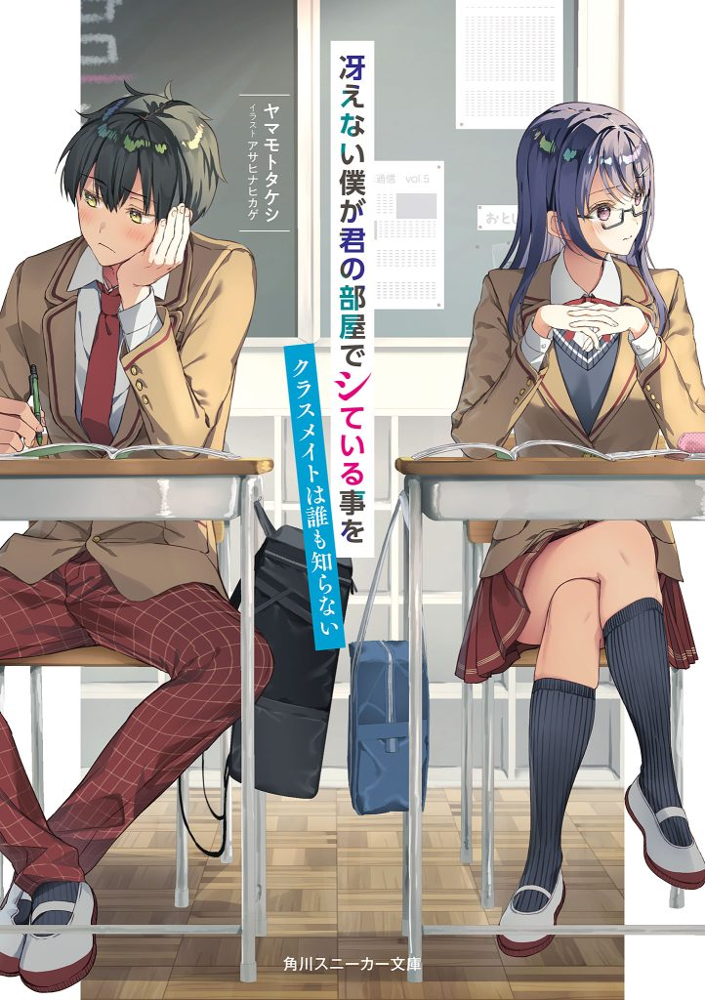

Saenai boku ga kimi no heya de shite iru koto o kurasumeito wa daremoshiranai
Novel Info's
Status: Completed
Genre: Adult, Comedy, Drama, Ecchi, Harem, Romance, School Life
Author: Yamamoto Takeshi
Illustrator: Asahina Hikage
Volumes: 3
Original Publisher: Kadokawa
English Publisher: N/A
Fan Translation: Travis Translations
Description/Sypnosis
Touyama, a s*upid high school student, who is currently f*cking with his friend Takai Yumi but when he wants to start f*cking, it turns out that Touyama has run out of cond*ms, so Touyama goes out of the house to buy more cond*ms.
After a while, Touyama finally found a vending machine that contained cond*ms.
When Touyama was about to take it, he was spotted by his classmate Marika Uehara, a beautiful girl from the elite / top caste group in her class.
Maybe from now on, things would get a little uncomfortable when it was Uehara who would get involved with him.
And Uehara, who had never spoken to Touyama even though they were in the same class, became interested in Touyama.
Download Links
Epub & Pdf